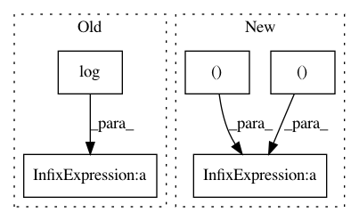

72caa3677f5f9cc09ed98324c76454c38a7e8098,lib/metric.py,MaskLogLossMetric,update,#MaskLogLossMetric#,137
Before Change
// Compute the logarithm
pred = pred[valid_inds]+ 1e-14
// Compute cross entropy
loss = -np.log(pred)*labels - np.log(1-pred)*(1-labels)
loss = np.sum(loss)
// Update metric
self.sum_metric += loss
self.num_inst += len(valid_inds)
After Change
// label (b, p)
label = label.asnumpy().astype("int32").reshape((-1))
// pred (b, c, p) or (b, c, h, w) --> (b, p, c) --> (b*p, c)
pred = pred.asnumpy().reshape((pred.shape[0], pred.shape[1], -1)).transpose((0, 2, 1))
pred = pred.reshape((label.shape[0], -1))
// filter with keep_inds
keep_inds = np.where(label != -1)[0]
label = label[keep_inds]
cls = pred[keep_inds, label]
cls += 1e-14
cls_loss = -1 * np.log(cls)
cls_loss = np.sum(cls_loss)
self.sum_metric += cls_loss
self.num_inst += label.shape[0]
In pattern: SUPERPATTERN
Frequency: 3
Non-data size: 5
Instances
Project Name: mahyarnajibi/SNIPER
Commit Name: 72caa3677f5f9cc09ed98324c76454c38a7e8098
Time: 2018-06-04
Author: mahyarnajibi@gmail.com
File Name: lib/metric.py
Class Name: MaskLogLossMetric
Method Name: update
Project Name: leftthomas/SRGAN
Commit Name: 5e1b913c28e0ce51db00919a2f74b5853da2d54d
Time: 2017-12-05
Author: leftthomas@qq.com
File Name: loss.py
Class Name: GeneratorLoss
Method Name: forward
Project Name: CamDavidsonPilon/lifelines
Commit Name: b46c893e2c0f9cd505b597c2ff215a0df04b6050
Time: 2020-05-19
Author: cam.davidson.pilon@gmail.com
File Name: lifelines/fitters/npmle.py
Class Name:
Method Name: log_likelihood